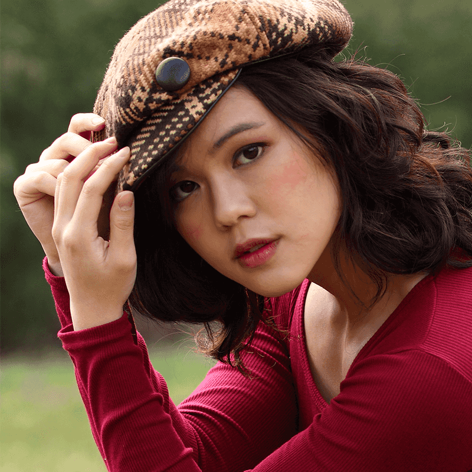
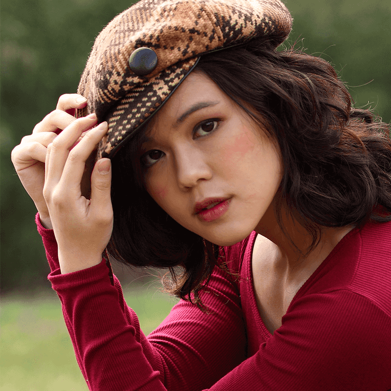

Legal Background
Kit Worsham is a graduate from George Washington Law in 2017. He currently resides in Colorado. His legal focus is cybersecurity and digital rights. He is familiar with legal issues involving copyright, the Computer Fraud and Abuse Act, and constitutional limitations of government access to private devices.His initial interest in coding and tech developed when he discovered web design in middle school. At 12 years old, he noticed that certain profile pages on a game called "Neopets" had unique and custom designs. Being creatively inclined, he set out to figure out how this was done.
Over the years, he continued exploring his programming interests alongside his academic career. He gained knowledge on encryption, peer-to-peer networks, and general connection and device security. He now combines his tech interests with his legal background to further an effective framework for the digital landscape.
In particular, he is an avid proponent of net neutrality and the open internet. He has worked with public interest organizations in defending free and open access to the web.
Web Development and Design
In addition to his legal background, Kit has a strong foundation in design and is familiar with front end web development. His artistic expertise is illustration and concept design. He has designed logos and promotional materials for multiple student organizations including the "Military Law Society" (MLS) and National Security Law Association" (NSLA) at GW Law.He is experienced with graphics utilities (Photoshop and InDesign) and code editors (Sublime Text Editor, Haroopad, and Atom). Primarily, his work involves HTML and CSS.